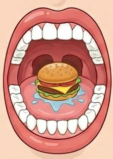
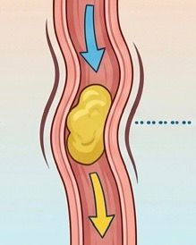
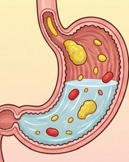
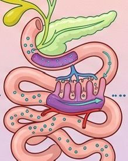
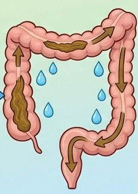
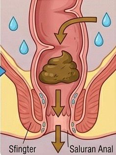

Mulut adalah tempat pertama makanan masuk. Di mulut makanan dikunyah oleh gigi dan dibantu air liur agar mudah ditelan.

Kerongkongan adalah saluran yang membawa makanan dari mulut menuju lambung.

Lambung bertugas menghancurkan makanan dengan bantuan asam lambung.

Usus halus menyerap sari-sari makanan yang dibutuhkan tubuh.

Usus besar menyerap air dari sisa makanan sebelum dibuang.

Anus adalah tempat keluarnya sisa makanan dari tubuh.